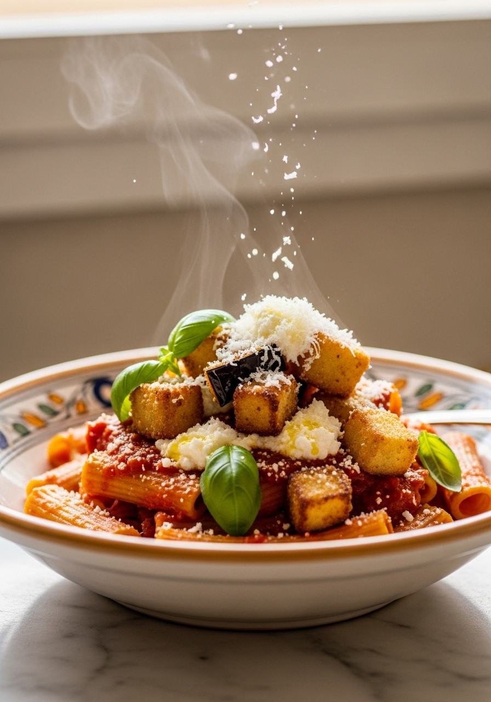
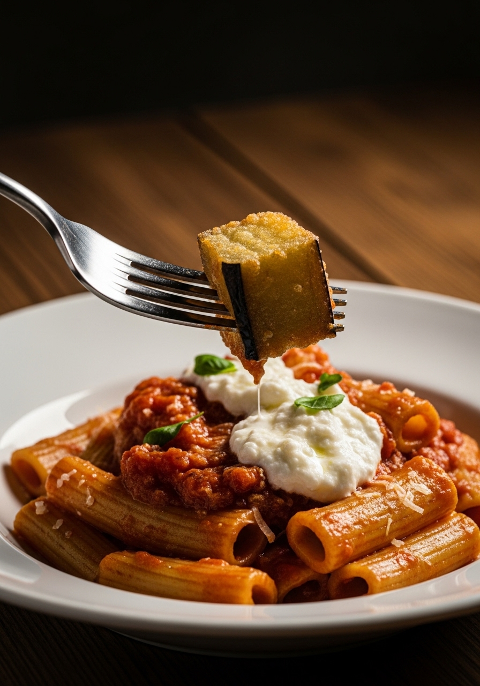

La pasta alla Norma è uno dei piatti più celebri della cucina siciliana, nato a Catania in onore dell'opera 'Norma' di Vincenzo Bellini. La storia vuole che il commediografo Nino Martoglio, dopo aver assaggiato questo piatto per la prima volta, esclamasse: 'Chista è 'na vera Norma!' — equiparandone la perfezione a quella del capolavoro musicale. Da allora, melanzane fritte, pomodoro fresco, basilico e ricotta salata sono il quartetto perfetto e insostituibile della tavola siciliana.

SicilianaCatania, fine Ottocento. Il commediografo e poeta dialettale Nino Martoglio siede a tavola davanti a un piatto fumante di pasta con melanzane fritte, sugo di pomodoro e ricotta salata. Dopo il primo boccone, alza gli occhi e pronuncia la frase che è entrata nella storia della cucina italiana: 'Chista è 'na vera Norma!' — in dialetto catanese, 'Questa è una vera Norma!'. Il riferimento era inequivocabile: l'opera 'Norma' di Vincenzo Bellini, il più grande compositore catanese, considerata il capolavoro assoluto del belcanto italiano del XIX secolo. Equiparare un piatto di pasta a un'opera lirica può sembrare eccessivo. Ma a Catania, dove il cibo è cultura e tradizione, era il massimo degli elogi possibili. Da quel momento, il piatto porta orgogliosamente il nome dell'opera. In dialetto siciliano, 'una Norma' è sinonimo di perfezione.
La ricotta salata è un formaggio a pasta dura ottenuto dalla salatura e stagionatura prolungata della ricotta fresca di pecora. Ha un sapore intenso, deciso, leggermente salato e acidulo, con una consistenza granulosa e compatta che si presta perfettamente alla grattugia grossolana. È prodotta in tutta la Sicilia ma quella delle province di Palermo, Agrigento e Ragusa è considerata la migliore per questo piatto. Fuori dalla Sicilia si trova nei negozi specializzati di formaggi italiani, nelle enoteche e online. Non sostituirla mai con ricotta fresca (troppo delicata, umida e insapore), né con Parmigiano Reggiano (troppo neutro e dolce) né con Pecorino fresco. Il Pecorino Romano stagionato è l'unico sostituto accettabile in caso di assoluta necessità — ma il risultato sarà diverso dall'originale catanese.
Ingredienti
Procedimento

A Catania la pasta alla Norma si prepara tradizionalmente con i rigatoni: i loro 'rigati' longitudinali trattengono perfettamente il sugo di pomodoro e le scaglie di ricotta salata. Nel resto della Sicilia si usano anche gli spaghetti, i maccheroni e la pasta corta in generale. Alcune versioni di Palermo aggiungono una foglia di menta fresca insieme al basilico — una variante inusuale ma autentica nella tradizione palermitana. La pasta alla Norma si conserva in frigorifero per 2 giorni ma perde inevitabilmente la croccantezza delle melanzane fritte. Per conservarla al meglio, tieni il sugo separato dalle melanzane fritte e unisci solo al momento di servire. Non congelare mai la pasta già condita.
Tecnicamente sì, ma non sarà più la Norma autentica. Le melanzane al forno assorbono meno olio ma hanno una consistenza più asciutta e un sapore meno intenso. La frittura profonda in abbondante olio caldo crea quella superficie dorata caramellata e quella morbidezza interna fondente che rendono il piatto iconico. È la tecnica tradizionale siciliana e non ha sostituti all'altezza.
I rigatoni sono la scelta tradizionale di Catania: i loro 'rigati' trattengono perfettamente il sugo denso. Gli spaghetti sono diffusi nel resto della Sicilia. Entrambi sono autentici. Evita assolutamente la pasta fresca all'uovo: la pasta di semola di grano duro è la tradizione siciliana.
Una buona ricotta salata deve essere compatta e dura al tatto (deve resistere alla pressione delle dita), di colore bianco-avorio con una crosta esterna più scura, e al sapore deve essere decisa, sapida e leggermente acidula. Evita le versioni troppo fresche o morbide: non si grattugiano correttamente e si sgretolano nel piatto invece di creare quella 'neve' caratteristica.
D'estate (giugno-settembre), usa sempre pomodori freschi maturi — preferibilmente datterini siciliani, San Marzano o costoluti: il sugo sarà superiore per sapore e profumo. Il resto dell'anno, i pomodori pelati San Marzano DOP danno risultati eccellenti. Non usare mai polpa di pomodoro a cubetti: è troppo acquosa.
Ci sono due cause principali: l'olio non era abbastanza caldo (deve essere a 180°C costanti — usa un termometro) oppure le melanzane non erano asciugate perfettamente dopo il riposo sotto sale. L'umidità residua fa abbassare istantaneamente la temperatura dell'olio e le melanzane lo assorbono come spugne. Asciuga sempre accuratamente con carta assorbente prima di friggere.